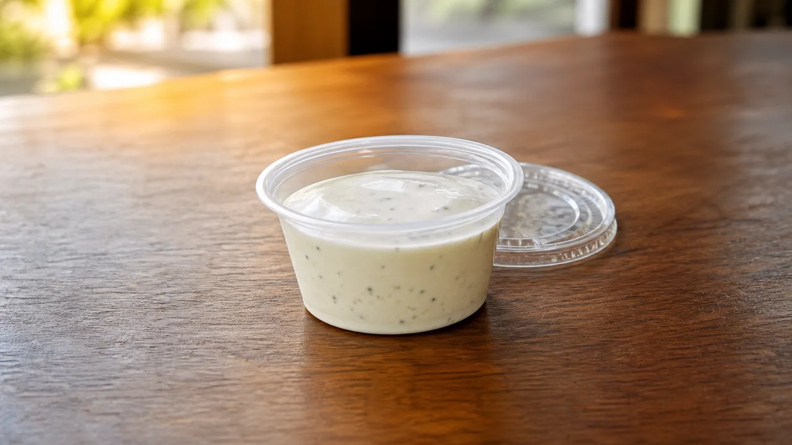

Compare Wingstop Regular and Large Ranch prices, calories, portion math, ordering uses and allergen considerations.

Creamy ranch dip presented in an individual restaurant cup
Our September 2026 menu snapshot lists Regular Ranch for $1.49 and 320 calories, while Large Ranch is $4.49 and 1,620 calories. Both sizes cover the same dip, so this page compares them together. Prices and availability can change after you select a restaurant.
| Ranch size | Price | Listed calories | Calories relative to Regular |
|---|---|---|---|
| Regular | $1.49 | 320 Cal | 1× |
| Large | $4.49 | 1,620 Cal | About 5.1× |
Large costs about three times the Regular price but carries just over five times the listed calories. That difference suggests a much larger portion, but calorie ratios do not prove an exact cup volume. Wingstop does not display fluid ounces in the supplied menu card.
Wingstop’s corporate overview calls ranch an iconic housemade dip. Official location pages also list House Made Ranch among the dip choices for meal deals. “Housemade” describes restaurant preparation; it does not make the dip low-calorie or suitable for every allergy.
Regular is the practical choice for one person, a small wing order or a calorie-controlled meal. One Regular cup adds 320 calories before counting the chicken, fries or drink. If a combo already includes a dip, check the cart before adding another cup.
Large Ranch works better for a group order, party pack or several items that need dip. Five people dividing it evenly would receive a calculated share of about 324 calories each. That is only planning math; the group may not divide the cup evenly.
Ranch can accompany classic wings, boneless wings, tenders and fries. Wingstop also uses House Made Ranch on Louisiana Voodoo Fries together with Cajun seasoning and cheese sauce. Adding a separate dip to loaded fries increases the meal total beyond the fries’ listed calories.
Ranch is a creamy prepared dip, so do not infer allergen safety from its color or name. Review Wingstop’s current allergen information and ask the selected restaurant when egg, milk, soy or another allergen affects the order. Wingstop warns that it cannot guarantee against cross-contact and that nutrition can vary by location.
Choose your Wingstop location to load its current menu and prices.
Open the relevant menu category and select Ranch Dip.
Check the size, included items, nutrition and available customizations.
Select pickup or delivery and review the final cart before payment.
The supplied September 2026 menu snapshot lists 320 calories for Regular Ranch and 1,620 for Large Ranch.
Yes. They are two sizes of Ranch, which is why both are covered in one article.
Some meals include a choice of dip, but the live cart controls the exact inclusion and any extra charge.
Yes. Wingstop prices can differ by restaurant and ordering channel, so the selected store’s live cart is the final price source.
Availability can vary by restaurant. Select a store in Wingstop’s ordering flow to confirm whether the item is currently offered.